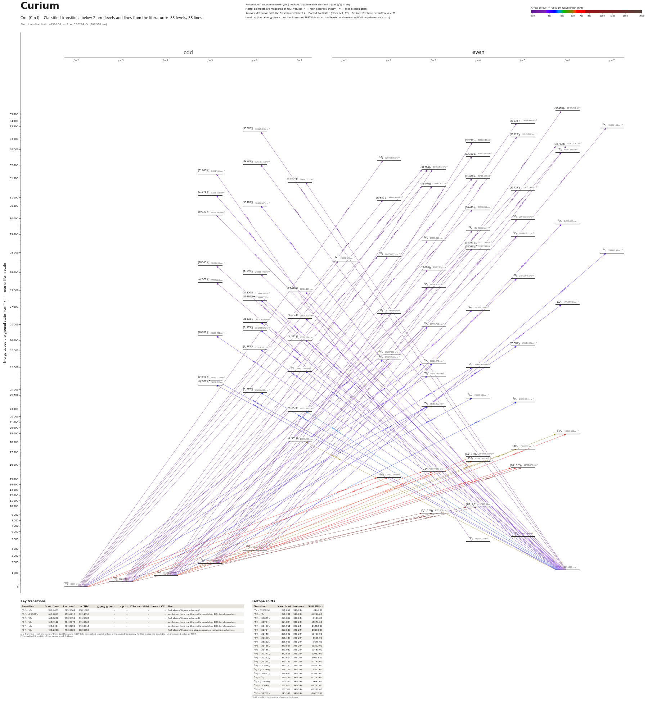

Curium energy level diagram
Energy levels and transitions of neutral curium (Cm I): 83 levels and 88 classified lines below 2 µm taken from the cited literature, each line with its vacuum wavelength and frequency. The NIST Atomic Spectra Database lists only the ground level and the ionisation limit of curium, so the level energies on this page are those of the literature sources named below.
Hover a line or a level to isolate it, click to keep it selected. Scroll to zoom, drag to move.

Download: diagram (PDF) diagram (SVG) transitions (CSV) levels (CSV) source code

Key transitions of curium
| Transition | λ vac (nm) | λ air (nm) | ν (THz) | |⟨J‖er‖J′⟩| (ea₀) | A (s⁻¹) | Γ/2π up. (MHz) | branch (%) | Use |
|---|---|---|---|---|---|---|---|---|
| 9D°2 – 7D2 | 395.4481 | 395.3362 | 758.1083 | – | – | – | – | first step of Mainz scheme C |
| 9D°4 – (25581)5 | 403.7851 | 403.6710 | 742.4555 | – | – | – | – | excitation from the thermally populated 9D4 level seen in… |
| 9D°2 – 9D3 | 404.0600 | 403.9459 | 741.9503 | – | – | – | – | first step of Mainz scheme B |
| 9D°3 – 9D2 | 404.4112 | 404.2970 | 741.3060 | – | – | – | – | excitation from the thermally populated 9D3 level seen in… |
| 9D°3 – 7D4 | 404.9434 | 404.8290 | 740.3318 | – | – | – | – | excitation from the thermally populated 9D3 level seen in… |
| 9D°2 – 9D3 | 433.2038 | 433.0820 | 692.0356 | – | – | – | – | first step of Mainz two-step resonance-ionization scheme… |
λ, ν from the level energies of the cited literature (NIST lists no excited levels) unless a measured frequency for this isotope is available. A: measured value or NIST. Γ/2π: natural linewidth of the upper level, 1/(2πτ).
Isotope shifts
| Transition | λ vac (nm) | Isotopes | Shift (MHz) |
|---|---|---|---|
| 7F6 – (33362)°6 | 311.059 | 246-244 | 6446.00 |
| 9D°2 – 5P2 | 311.731 | 246-244 | -14210.00 |
| 9D°5 – (33631)5 | 313.807 | 246-244 | -1199.00 |
| 9D°2 – (31764)3 | 314.824 | 246-244 | -10073.00 |
| 9D°6 – (35460)6 | 315.951 | 246-244 | -11812.00 |
| 9D°3 – (31764)3 | 317.847 | 246-244 | -10103.00 |
| 9D°2 – (31446)3 | 318.002 | 246-244 | -10403.00 |
| 9D°4 – (32190)4 | 318.733 | 246-244 | -6595.00 |
| 9D°5 – (33122)5 | 318.903 | 246-244 | -7675.00 |
| 9D°3 – (31468)4 | 320.863 | 246-244 | -11392.00 |
| 9D°3 – (31446)3 | 321.087 | 246-244 | -10433.00 |
| 9D°5 – (32771)4 | 322.516 | 246-244 | -12052.00 |
| 9D°5 – (32762)6 | 322.604 | 246-244 | -10613.00 |
| 9D°4 – (31764)3 | 323.121 | 246-244 | -10133.00 |
| 9D°2 – (30886)2 | 323.767 | 246-244 | -13431.00 |
| 7F6 – (32010)°6 | 324.718 | 246-244 | 4317.00 |
| 9D°4 – (31427)5 | 326.675 | 246-244 | -10972.00 |
| 9D°5 – 9F6 | 328.139 | 246-244 | -10193.00 |
| 7F6 – (31464)°7 | 330.580 | 246-244 | 4647.00 |
| 9D°3 – (30440)4 | 331.810 | 246-244 | -12771.00 |
| 9D°6 – 9F7 | 337.567 | 246-244 | -11272.00 |
| 9D°6 – (32762)6 | 345.391 | 246-244 | -10852.00 |
Shift = ν(first isotope) − ν(second isotope).
Listed Cm transitions below 2 µm
| Lower level | Upper level | λ vacuum (nm) | λ air (nm) | ν (THz) | Type | |⟨J‖er‖J′⟩| (ea₀) | A (s⁻¹) | Branching (%) | Source of matrix element / A |
|---|---|---|---|---|---|---|---|---|---|
| 7F6 | (33362)°6 | 311.0592 | 310.9690 | 963.7794 | E1 | – | – | – | – |
| 9D°2 | 5P2 | 311.7315 | 311.6411 | 961.7008 | E1 (intercombination) | – | – | – | – |
| 9D°5 | (33631)5 | 313.8069 | 313.7160 | 955.3404 | E1 | – | – | – | – |
| 9D°2 | (31764)3 | 314.8237 | 314.7325 | 952.2552 | E1 | – | – | – | – |
| 9D°6 | (35460)6 | 315.9514 | 315.8599 | 948.8564 | E1 | – | – | – | – |
| 9D°3 | (31764)3 | 317.8472 | 317.7553 | 943.1968 | E1 | – | – | – | – |
| 9D°2 | (31446)3 | 318.0018 | 317.9098 | 942.7383 | E1 | – | – | – | – |
| 9D°4 | (32190)4 | 318.7335 | 318.6413 | 940.5742 | E1 | – | – | – | – |
| 9D°5 | (33122)5 | 318.9031 | 318.8109 | 940.0740 | E1 | – | – | – | – |
| 9D°3 | (31468)4 | 320.8634 | 320.7707 | 934.3306 | E1 | – | – | – | – |
| 9D°3 | (31446)3 | 321.0869 | 320.9942 | 933.6800 | E1 | – | – | – | – |
| 9D°5 | (32771)4 | 322.5156 | 322.4225 | 929.5439 | E1 | – | – | – | – |
| 9D°5 | (32762)6 | 322.6039 | 322.5107 | 929.2897 | E1 | – | – | – | – |
| 9D°4 | (31764)3 | 323.1210 | 323.0278 | 927.8024 | E1 | – | – | – | – |
| 9D°2 | (30886)2 | 323.7671 | 323.6736 | 925.9511 | E1 | – | – | – | – |
| 7F6 | (32010)°6 | 324.7184 | 324.6248 | 923.2382 | E1 | – | – | – | – |
| 9D°4 | (31427)5 | 326.6747 | 326.5806 | 917.7094 | E1 | – | – | – | – |
| 9D°5 | 9F6 | 328.1395 | 328.0449 | 913.6129 | E1 | – | – | – | – |
| 7F6 | (31464)°7 | 330.5802 | 330.4850 | 906.8677 | E1 | – | – | – | – |
| 9D°3 | (30440)4 | 331.8098 | 331.7144 | 903.5068 | E1 | – | – | – | – |
| 9D°6 | 9F7 | 337.5665 | 337.4696 | 888.0988 | E1 | – | – | – | – |
| 9D°6 | (32762)6 | 345.3912 | 345.2922 | 867.9795 | E1 | – | – | – | – |
| 7F6 | (30122)°5 | 345.9329 | 345.8338 | 866.6203 | E1 | – | – | – | – |
| 9D°2 | 9F2 | 351.1283 | 351.0279 | 853.7976 | E1 | – | – | – | – |
| 9D°2 | 9F1 | 352.3363 | 352.2356 | 850.8702 | E1 | – | – | – | – |
| 9D°3 | 9F3 | 352.5947 | 352.4939 | 850.2466 | E1 | – | – | – | – |
| 9D°3 | (28526)4 | 354.3072 | 354.2060 | 846.1370 | E1 | – | – | – | – |
| 9D°5 | 9F5 | 354.8031 | 354.7017 | 844.9546 | E1 | – | – | – | – |
| 9D°3 | 9F2 | 354.8935 | 354.7921 | 844.7393 | E1 | – | – | – | – |
| 9D°4 | 9P5 | 356.2454 | 356.1437 | 841.5335 | E1 | – | – | – | – |
| 9D°4 | (28581)4 | 360.1645 | 360.0617 | 832.3765 | E1 | – | – | – | – |
| 9D°5 | 9F4 | 364.0983 | 363.9945 | 823.3834 | E1 | – | – | – | – |
| 9D°4 | (28098)3 | 366.5386 | 366.4342 | 817.9016 | E1 | – | – | – | – |
| 7F6 | (28165)°5 | 371.0484 | 370.9428 | 807.9606 | E1 | – | – | – | – |
| 9D°4 | 7P3 | 373.0065 | 372.9005 | 803.7191 | E1 (intercombination) | – | – | – | – |
| 7F4 | (31663)°5 | 373.3414 | 373.2353 | 802.9981 | E1 | – | – | – | – |
| 7F6 | (5,3P2)°6 | 374.8930 | 374.7865 | 799.6747 | E1 | – | – | – | – |
| 7F6 | (4,1P1)°5 | 376.4116 | 376.3047 | 796.4484 | E1 | – | – | – | – |
| 9D°3 | 9D2 | 377.6828 | 377.5755 | 793.7679 | E1 | – | – | – | – |
| 7F6 | (27410)°7 | 381.7388 | 381.6305 | 785.3339 | E1 | – | – | – | – |
| 7F6 | (27350)°6 | 382.6225 | 382.5139 | 783.5203 | E1 | – | – | – | – |
| 9D°5 | 9D5 | 383.4403 | 383.3316 | 781.8491 | E1 | – | – | – | – |
| 7F6 | (27265)°6 | 383.8684 | 383.7596 | 780.9771 | E1 | – | – | – | – |
| 9D°6 | 9D6 | 384.3093 | 384.2003 | 780.0813 | E1 | – | – | – | – |
| 9D°4 | 9D4 | 385.1018 | 384.9926 | 778.4758 | E1 | – | – | – | – |
| 7F5 | (31076)°5 | 385.5201 | 385.4108 | 777.6312 | E1 | – | – | – | – |
| 9D°4 | 9D3 | 390.1359 | 390.0254 | 768.4309 | E1 | – | – | – | – |
| 7F6 | (6,1P1)°7 | 393.7781 | 393.6667 | 761.3233 | E1 | – | – | – | – |
| 9D°5 | 11P6 | 394.3143 | 394.2027 | 760.2881 | E1 | – | – | – | – |
| 7F5 | (30483)°6 | 394.5264 | 394.4147 | 759.8794 | E1 | – | – | – | – |
| 7F6 | (26532)°6 | 394.9801 | 394.8684 | 759.0064 | E1 | – | – | – | – |
| 9D°2 | 7D2 | 395.4481 | 395.3362 | 758.1083 | E1 (intercombination) | – | – | – | – |
| 7F6 | (6,1P1)°6 | 396.5949 | 396.4827 | 755.9162 | E1 | – | – | – | – |
| 9D°2 | 7D3 | 399.6231 | 399.5101 | 750.1880 | E1 (intercombination) | – | – | – | – |
| 7F6 | (26106)°5 | 401.7310 | 401.6175 | 746.2517 | E1 | – | – | – | – |
| 7F6 | (5,3P2)°7 | 403.2903 | 403.1764 | 743.3663 | E1 | – | – | – | – |
| 9D°4 | (25581)5 | 403.7851 | 403.6710 | 742.4555 | E1 | – | – | – | – |
| 9D°2 | 9D3 | 404.0600 | 403.9459 | 741.9503 | E1 | – | – | – | – |
| 9D°3 | 9D2 | 404.4112 | 404.2970 | 741.3060 | E1 | – | – | – | – |
| 9D°3 | 7D4 | 404.9434 | 404.8290 | 740.3318 | E1 (intercombination) | – | – | – | – |
| 9D°6 | 9F7 | 405.0799 | 404.9655 | 740.0822 | E1 | – | – | – | – |
| 7F6 | (4,3P2)°6 | 411.4448 | 411.3287 | 728.6336 | E1 | – | – | – | – |
| 9D°4 | 7D3 | 413.0879 | 412.9714 | 725.7353 | E1 (intercombination) | – | – | – | – |
| 7F6 | 9F°7 | 421.2810 | 421.1624 | 711.6211 | E1 (intercombination) | – | – | – | – |
| 7F6 | (24646)°5 | 426.7654 | 426.6453 | 702.4760 | E1 | – | – | – | – |
| 7F6 | (6,3P2)°5 | 429.4213 | 429.3005 | 698.1313 | E1 | – | – | – | – |
| 9D°2 | 9D3 | 433.2038 | 433.0820 | 692.0356 | E1 | – | – | – | – |
| 9D°3 | 9D4 | 434.6913 | 434.5691 | 689.6675 | E1 | – | – | – | – |
| 9D°4 | 9D5 | 444.9022 | 444.7774 | 673.8389 | E1 | – | – | – | – |
| 7F6 | (6,3P2)°6 | 446.0416 | 445.9164 | 672.1178 | E1 | – | – | – | – |
| 7F6 | (6,3P2)°7 | 460.9695 | 460.8404 | 650.3520 | E1 | – | – | – | – |
| 9D°5 | 11F6 | 584.7686 | 584.6065 | 512.6685 | E1 | – | – | – | – |
| 7F6 | (6,3P1)°7 | 595.4054 | 595.2405 | 503.5098 | E1 | – | – | – | – |
| 9D°4 | 11F5 | 606.0578 | 605.8900 | 494.6599 | E1 | – | – | – | – |
| 9D°3 | 11F4 | 624.5071 | 624.3344 | 480.0465 | E1 | – | – | – | – |
| 9D°2 | 11F3 | 637.8466 | 637.6703 | 470.0071 | E1 | – | – | – | – |
| 9D°2 | 11F2 | 655.6212 | 655.4401 | 457.2647 | E1 | – | – | – | – |
| 9D°6 | 11F6 | 664.2005 | 664.0172 | 451.3583 | E1 | – | – | – | – |
| 9D°3 | 11F2 | 668.8714 | 668.6868 | 448.2064 | E1 | – | – | – | – |
| 9D°4 | (7/2,3/2)5 | 670.8697 | 670.6845 | 446.8714 | E1 | – | – | – | – |
| 9D°4 | 11F3 | 672.8526 | 672.6669 | 445.5544 | E1 | – | – | – | – |
| 9D°5 | (7/2,3/2)4 | 679.5015 | 679.3141 | 441.1947 | E1 | – | – | – | – |
| 9D°5 | (7/2,3/2)5 | 716.4653 | 716.2678 | 418.4327 | E1 | – | – | – | – |
| 9D°6 | (7/2,3/2)5 | 839.4668 | 839.2361 | 357.1225 | E1 | – | – | – | – |
| 9D°3 | (7/2,1/2)4 | 1054.5864 | 1054.2976 | 284.2749 | E1 | – | – | – | – |
| 9D°2 | (7/2,1/2)3 | 1079.5203 | 1079.2246 | 277.7090 | E1 | – | – | – | – |
| 9D°4 | (7/2,1/2)3 | 1183.7515 | 1183.4276 | 253.2562 | E1 | – | – | – | – |
| 9D°5 | (7/2,1/2)4 | 1246.8400 | 1246.4990 | 240.4418 | E1 | – | – | – | – |
Reduced dipole matrix elements follow the convention A = ω³|d|²/(3πε₀ħc³(2J′+1)), with J′ the upper level. Tags show where a number comes from: measured, NIST compilation, high-accuracy theory, or a model calculation.
Cm energy levels
| Level | Energy (cm⁻¹) | J | Parity | Lifetime | gJ | Hyperfine A (MHz) | Hyperfine B (MHz) | Lifetime source | Hyperfine source |
|---|---|---|---|---|---|---|---|---|---|
| 9D°2 | 0.000 | 2 | odd | stable | – | – | – | – | – |
| 9D°3 | 302.153 | 3 | odd | – | 2 | – | – | – | – |
| 9D°4 | 815.655 | 4 | odd | – | 1.777 | – | – | – | – |
| 7F6 | 1214.203 | 6 | even | – | 1.452 | – | – | – | – |
| 9D°5 | 1764.268 | 5 | odd | – | 1.671 | – | – | – | – |
| 9D°6 | 3809.355 | 6 | odd | – | 1.624 | – | – | – | – |
| 7F4 | 4877.610 | 4 | even | – | 1.45 | – | – | – | – |
| 7F5 | 5136.519 | 5 | even | – | 1.463 | – | – | – | – |
| (7/2,1/2)3 | 9263.374 | 3 | even | – | 2.112 | – | – | – | – |
| (7/2,1/2)4 | 9784.543 | 4 | even | – | 1.796 | – | – | – | – |
| 11F2 | 15252.710 | 2 | even | – | 2.835 | – | – | – | – |
| 11F3 | 15677.750 | 3 | even | – | 2.127 | – | – | – | – |
| (7/2,3/2)5 | 15721.679 | 5 | even | – | 1.755 | – | – | – | – |
| 11F4 | 16314.782 | 4 | even | – | 1.842 | – | – | – | – |
| (7/2,3/2)4 | 16480.938 | 4 | even | – | 1.787 | – | – | – | – |
| 11F5 | 17315.732 | 5 | even | – | 1.703 | – | – | – | – |
| (6,3P1)°7 | 18009.483 | 7 | odd | – | 1.48 | – | – | – | – |
| 11F6 | 18865.049 | 6 | even | – | 1.63 | – | – | – | – |
| (6,3P2)°7 | 22907.611 | 7 | odd | – | 1.47 | – | – | – | – |
| 9D3 | 23083.822 | 3 | even | – | 1.985 | – | – | – | – |
| 9D5 | 23292.503 | 5 | even | – | 1.74 | – | – | – | – |
| 9D4 | 23306.985 | 4 | even | – | 1.866 | – | – | – | – |
| (6,3P2)°6 | 23633.638 | 6 | odd | – | 1.46 | – | – | – | – |
| (6,3P2)°5 | 24501.356 | 5 | odd | – | 1.45 | – | – | – | – |
| (24646)°5 | 24646.279 | 5 | odd | – | 1.41 | – | – | – | – |
| 9D3 | 24748.797 | 3 | even | – | 1.758 | – | – | – | – |
| 9F°7 | 24951.328 | 7 | odd | – | 1.5 | – | – | – | – |
| 7D4 | 24996.962 | 4 | even | – | 1.7 | – | – | – | – |
| 7D3 | 25023.578 | 3 | even | – | 1.821 | – | – | – | – |
| 9D2 | 25029.460 | 2 | even | – | 2.235 | – | – | – | – |
| 7D2 | 25287.770 | 2 | even | – | 1.982 | – | – | – | – |
| (4,3P2)°6 | 25518.802 | 6 | odd | – | 1.51 | – | – | – | – |
| (25581)5 | 25581.306 | 5 | even | – | 1.642 | – | – | – | – |
| (5,3P2)°7 | 26010.234 | 7 | odd | – | 1.48 | – | – | – | – |
| (26106)°5 | 26106.481 | 5 | odd | – | 1.283 | – | – | – | – |
| (6,1P1)°6 | 26428.852 | 6 | odd | – | 1.41 | – | – | – | – |
| 9D3 | 26447.750 | 3 | even | – | 1.901 | – | – | – | – |
| (26532)°6 | 26531.932 | 6 | odd | – | 1.452 | – | – | – | – |
| (6,1P1)°7 | 26609.213 | 7 | odd | – | 1.39 | – | – | – | – |
| 9D2 | 26779.400 | 2 | even | – | 2.216 | – | – | – | – |
| 9D4 | 26782.813 | 4 | even | – | 1.628 | – | – | – | – |
| 11P6 | 27124.748 | 6 | even | – | 1.66 | – | – | – | – |
| (27265)°6 | 27264.795 | 6 | odd | – | 1.29 | – | – | – | – |
| (27350)°6 | 27349.626 | 6 | odd | – | 1.48 | – | – | – | – |
| (27410)°7 | 27410.123 | 7 | odd | – | 1.301 | – | – | – | – |
| 7P3 | 27624.837 | 3 | even | – | 1.759 | – | – | – | – |
| (4,1P1)°5 | 27780.863 | 5 | odd | – | 1.4 | – | – | – | – |
| 9D5 | 27843.945 | 5 | even | – | 1.58 | – | – | – | – |
| (5,3P2)°6 | 27888.478 | 6 | odd | – | 1.386 | – | – | – | – |
| (28098)3 | 28097.914 | 3 | even | – | 1.786 | – | – | – | – |
| (28165)°5 | 28164.867 | 5 | odd | – | – | – | – | – | – |
| 9F1 | 28381.976 | 1 | even | – | 3.046 | – | – | – | – |
| 9F2 | 28479.622 | 2 | even | – | 2.013 | – | – | – | – |
| 9F7 | 28495.840 | 7 | even | – | 1.5 | – | – | – | – |
| (28526)4 | 28526.244 | 4 | even | – | 1.623 | – | – | – | – |
| (28581)4 | 28580.748 | 4 | even | – | 1.622 | – | – | – | – |
| 9F3 | 28663.328 | 3 | even | – | 1.676 | – | – | – | – |
| 9P5 | 28886.192 | 5 | even | – | 1.63 | – | – | – | – |
| 9F4 | 29229.382 | 4 | even | – | 1.601 | – | – | – | – |
| 9D6 | 29830.066 | 6 | even | – | 1.54 | – | – | – | – |
| 9F5 | 29948.918 | 5 | even | – | 1.523 | – | – | – | – |
| (30122)°5 | 30121.545 | 5 | odd | – | 1.242 | – | – | – | – |
| (30440)4 | 30439.897 | 4 | even | – | 1.545 | – | – | – | – |
| (30483)°6 | 30483.367 | 6 | odd | – | 1.347 | – | – | – | – |
| (30886)2 | 30886.403 | 2 | even | – | 1.81 | – | – | – | – |
| (31076)°5 | 31075.505 | 5 | odd | – | 1.39 | – | – | – | – |
| (31427)5 | 31427.145 | 5 | even | – | 1.63 | – | – | – | – |
| (31446)3 | 31446.365 | 3 | even | – | 1.86 | – | – | – | – |
| (31464)°7 | 31464.053 | 7 | odd | – | 1.315 | – | – | – | – |
| (31468)4 | 31468.066 | 4 | even | – | 1.536 | – | – | – | – |
| (31663)°5 | 31662.743 | 5 | odd | – | 1.329 | – | – | – | – |
| (31764)3 | 31763.813 | 3 | even | – | 1.85 | – | – | – | – |
| (32010)°6 | 32010.115 | 6 | odd | – | 1.228 | – | – | – | – |
| 5P2 | 32078.886 | 2 | even | – | 1.769 | – | – | – | – |
| (32190)4 | 32189.832 | 4 | even | – | 1.78 | – | – | – | – |
| 9F6 | 32239.115 | 6 | even | – | 1.547 | – | – | – | – |
| (32762)6 | 32762.036 | 6 | even | – | 1.58 | – | – | – | – |
| (32771)4 | 32770.516 | 4 | even | – | 1.548 | – | – | – | – |
| (33122)5 | 33121.760 | 5 | even | – | 1.457 | – | – | – | – |
| (33362)°6 | 33362.424 | 6 | odd | – | 1.135 | – | – | – | – |
| 9F7 | 33433.144 | 7 | even | – | 1.54 | – | – | – | – |
| (33631)5 | 33630.995 | 5 | even | – | 1.419 | – | – | – | – |
| (35460)6 | 35459.796 | 6 | even | – | 1.56 | – | – | – | – |
Cm⁺ ionisation limit 48330.68 cm⁻¹ = 5.99224 eV (206.908 nm)
Sources
- Blaise & Wyart, Selected Constants: Energy Levels and Atomic Spectra of Actinides (Tables…
- Blaise & Wyart, Selected Constants: Energy Levels and Atomic Spectra of Actinides (Tables…
- Blaise & Wyart, Selected Constants: Energy Levels and Atomic Spectra of Actinides (Tables…
Curium has no stable isotope; level energies, J, configurations, Lande g and level isotope shifts are those of 244Cm from the Blaise-Wyart compilation (archived web tables; analysis of Worden & Conway 1976 and Blaise, Worden, Conway 1988). levels_not_in_nist holds the levels of the entered lines plus every tabulated level below 16000 cm-1. The ground level 5f7 6d 7s2 9D2 is odd; the lowest even level 5f8 7s2 7F6 is at 1214.203 cm-1. Lines: the selected-wavelength table of the same compilation (air wavelengths; levels printed truncated to 1 cm-1, matched here to the level tables by energy, J and wavenumber; residual in each note). relative_intensity carries the printed table value, identical for all lines. isotope_shift_MHz with key 246-244 is derived from the level-shift column Delta-T(246-244) (10^-3 cm^-1, ground level = 0) and means nu(246Cm) - nu(244Cm). The laser first steps of Kneip et al. 2022 were measured in 248Cm; they are flagged in "use" and their measured energies are not stored as level energies because they refer to another isotope.
Atoms with measured data
- Lithium-632 levels, 85 lines
- Lithium-732 levels, 85 lines
- Beryllium-917 levels, 26 lines
- Sodium-2336 levels, 106 lines
- Magnesium-2418 levels, 61 lines
- Magnesium-2518 levels, 61 lines
- Potassium-3934 levels, 84 lines
- Potassium-4034 levels, 84 lines
- Potassium-4134 levels, 84 lines
- Calcium-4035 levels, 61 lines
- Calcium-4335 levels, 61 lines
- Rubidium-8536 levels, 94 lines
- Rubidium-8736 levels, 94 lines
- Strontium-8740 levels, 70 lines
- Strontium-8840 levels, 70 lines
- Caesium-13331 levels, 79 lines
- Barium-13744 levels, 89 lines
- Barium-13844 levels, 89 lines
- Dysprosium-16339 levels, 55 lines
- Dysprosium-16439 levels, 55 lines
- Ytterbium-17118 levels, 26 lines
- Ytterbium-17418 levels, 26 lines